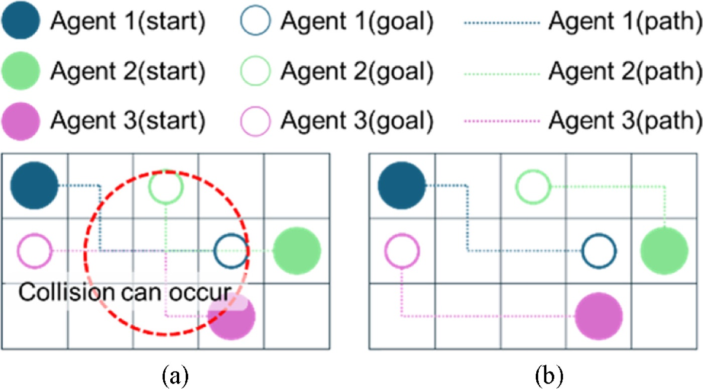
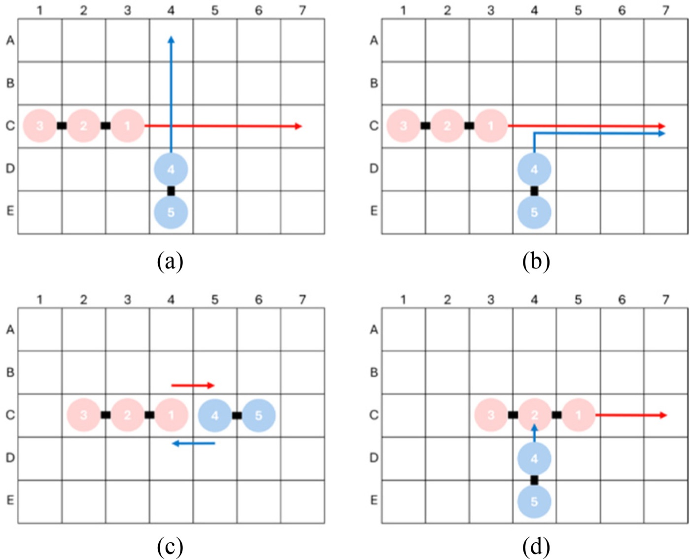
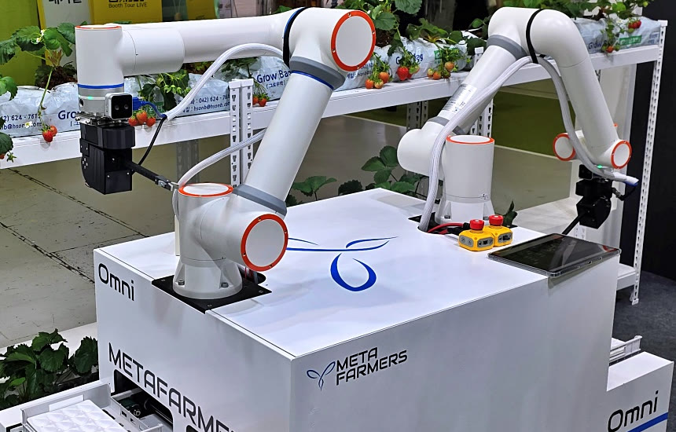
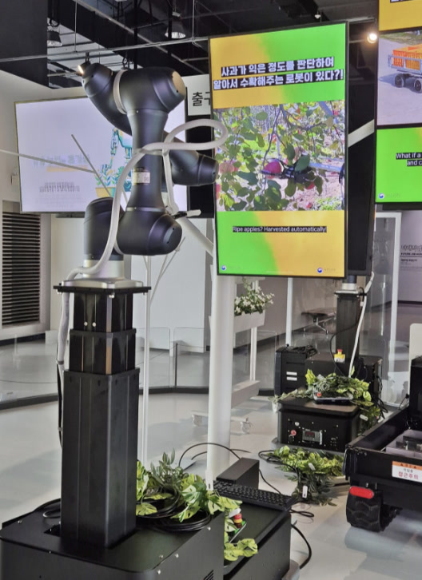
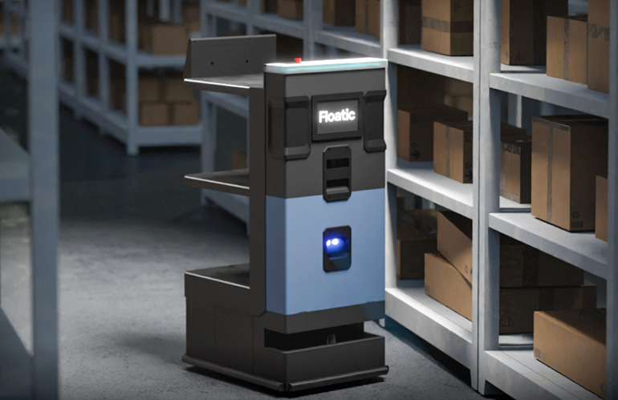
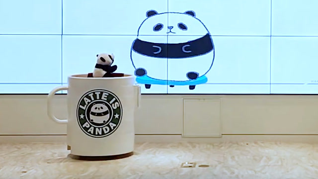
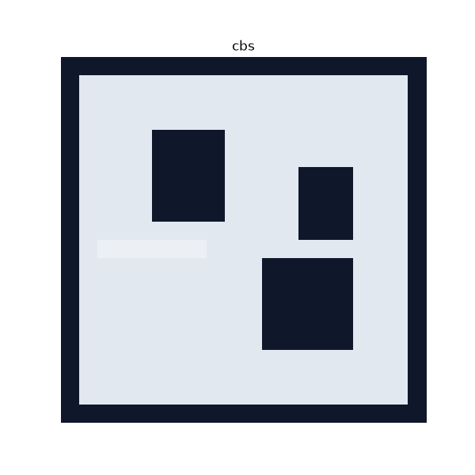
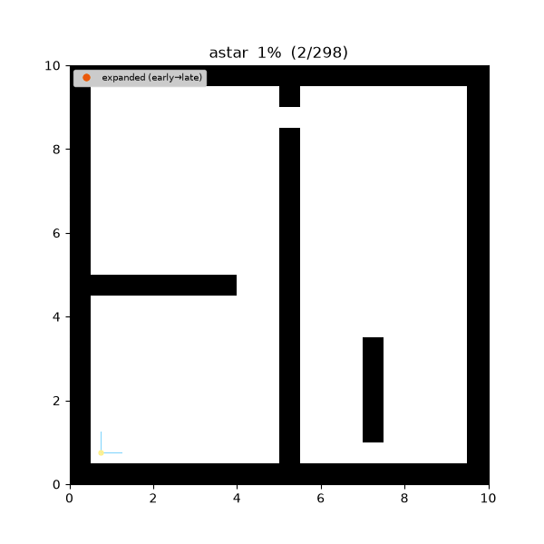
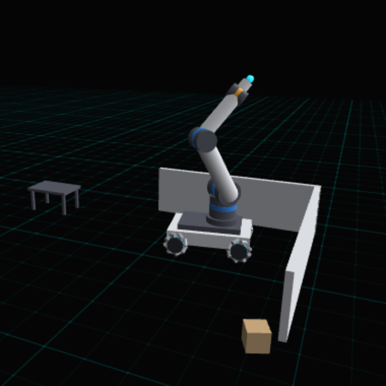

About
I am an M.S. student in Robotics at the University of Michigan. I work on multi-robot navigation and multi-agent path finding, with a focus on crowded spaces where robots keep blocking each other.
Before Michigan I spent three years in industry. At Floatic I built the navigation stack and middleware for a fleet of warehouse robots. At Metafarmers I led a seven-person robotics team that put two agricultural robots into production.
I am looking for PhD positions starting in Fall 2027.
Professional experience
Sep 2025 –Apr 2026Seoul, Korea
MetafarmersRobotics Software Team Lead
AI and robotics that automate repetitive, skilled farm work.- Built and led a seven-person robotics AI team, and set its structure, technical roadmap and system architecture.
- Owned the Omni Farmer robotics stack from architecture to production, with two robots operating in unstructured smart-farm environments.
- Designed the multi-robot management system and its infrastructure so the deployment could grow to larger fleets.
Jul 2022 –Sep 2024Seoul, Korea
FloaticRobotics Software and Platform Engineer
Warehouse automation: autonomous mobile robots and a real-time fleet management platform.- Designed the robot software architecture for Flody, including a middleware layer that kept robot code independent of the backend, so Kafka and AWS IoT could be swapped without touching the robots.
- Built and deployed multi-robot navigation across three warehouse sites: two partner-operated production facilities and one internal testbed.
- Ran a fleet of 10 robots for more than 300 hours of live operation and cut fleet deadlocks from 3–4 per hour to about one every two hours.
Education
2026 – now
University of MichiganM.S. in Robotics
2016 – 2023
Hanyang University ERICAB.S. in Robotics Engineering
Research experience
2024 – 2025
Multi-agent path finding in congested environmentsResearch collaboration with AIRO Lab, Hanyang University ERICA. Worked on continuous-time CBS and agent merging and splitting; co-authored the two papers below.
2019 – 2021
AIRO Lab, Hanyang University ERICAUndergraduate Researcher, advised by Prof. Min-Sung Kang. Stereo pose estimation for screw insertion in the Item Assembly AI Robot Challenge.
Publications

Figures reproduced from the papers under CC BY-NC 3.0.
Projects
Industry

Omni Farmer: agricultural robots
Metafarmers, 2025–2026Strawberry harvesting and pollination robots. Defined the ROS 2 architecture from the motor control boards up to navigation; long-term SLAM fusing FAST-LIO with Cartographer kept localization stable across a 100 × 200 m site. Two robots went into production.

Apple-harvesting exhibit robot
Metafarmers, 2026A robot delivered to the Gwacheon National Science Museum for its farm-technology exhibition, where it recognizes apples and picks them without bruising using a gripper from the Rural Development Administration.

Flody: warehouse robot fleet
Floatic, 2022–2024Robots shared their poses and planned paths over a site-local Redis bus and added nearby robots to their own costmaps. Fleet deadlocks went from 3–4 per hour to about one every two hours. The system ran 10 robots for more than 300 hours across 3 warehouse sites.
Contract and lab work

Churo: dog behavior recognition
ROBOI contract, 2021Behavior recognition for a dog-care robot. YOLOv5 and SORT followed the dog, a labeling tool built 20-frame clips, and a ResNet-CRNN classifier sorted them into five behaviors at 90.4–96.8% test accuracy on 344 clips.

Item Assembly: stereo hole detection
AIRO Lab, 2020Pose estimation for screw insertion in a government-funded furniture-assembly challenge. YOLOv5 found screw holes, a pattern match removed false hits, and stereo triangulation gave a 3D pose that ROS services passed to the arm.
Undergraduate projects

Help: marine rescue-assist robot
Capstone, 2020–2022An unmanned robot for marine accidents. It detects capsizing from IMU tilt and alerts over LoRa, finds people in the water with RGB and thermal cameras, and reports their GPS position until rescuers arrive. Special Prize at the 2022 National Capstone Design Competition, plus two awards in 2021.

Latte Panda: recycling and donation robot
Intelligent Robot Crash Lab, 2020A ROS service robot on a LattePanda and Jetson TX2. YOLOv5 found people and classified cups as paper or plastic, a depth grid handled obstacle avoidance, and a touchscreen walked visitors through sorting and a QR donation. Team of 6.

Pattern inspection with two industrial cameras
UNIEYE, Feb–Jul 2020A C++/Qt inspection program on a Jetson Nano with two Basler cameras. It found circular marks with a hand-written Gaussian filter and Canny edge detector and passed or failed each part. I built the interface and the communication on a team of two.
Open source
2022
navigation2 #3068Proposed a plugin-based navigator design. The maintainers adopted it and shipped it as
nav2_core::NavigatorBase.2022
ros2/rcl #1003Fixed
rcl_wait returning an error when a timer is cancelled. Merged.2022
navigation2 #3141Fixed path joining in
RewrittenYaml. Merged.2023
navigation2 #3927Fixed the MPPI controller test build. Merged.
Study notes
robotics-study.github.ioI maintain robotics-study, a set of open study notes in English and Korean. Each algorithm is implemented in both C++ and Python and replayed step by step in the browser.

Multi-robot motion planning Prioritized A*, CBS, PIBT, RHCR, dRRT*, db-CBS
Navigation planning Graph search, sampling planners, DWA, MPC, MPPI
Modern Robotics All 13 chapters of Lynch and Park, with live figuresAlso: notes for ROB 501 (proofs to the Kalman filter), and 45 Korean posts on ROS 2 and Nav2 internals on my blog.
News
Oct 2026Released mrmp_introduction, study notes on multi-robot motion planning with a live sandbox.
Aug 2026Started the M.S. in Robotics at the University of Michigan.
Jul 2026Finished bilingual notes for all 13 chapters of Modern Robotics.
Apr 2026Paper on continuous-time CBS with space utilization published in JKSPE.